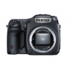
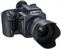
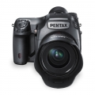
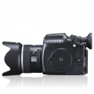
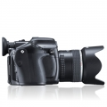
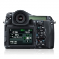
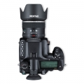

器材库 > 大中画幅可换镜头数码相机 > 645Z

规格总览
产品类型
大中画幅可换镜头数码相机
发布日期
2014-04-15
影像规格
影像传感器
CMOS
影像传感器尺寸
43.8×32.8mm
总像素
5299万
有效像素
5140万
色彩滤镜
原色滤光镜
色彩空间
sRGB、AdobeRGB
静态图像尺寸
JPEG：L（51M：8256×6192）、M（36M：6912×5184）、S（21M：5376×4032）、XS（3M：1920×1440）RAW／TIFF：L（51M：8256×6192）RAW（14位）：PEF、DNG
静态图像格式
TIFF, RAW（PEF／DNG）, JPEG（Exif 2.30）兼容, DCF 2.0 兼容
静态图像质量
JPEG：★★★（优良）、★★（良好）、★（好）、RAW + JPEG可同时记录
短片尺寸
Full HD（1920×1080、60i／50i／30p／25p／24p）、HD（1280×720、60p／50p／30p／25p／24p）
短片格式
MPEG4-AVC/H.264
防抖系统
镜头移位式（支持的镜头）
除尘系统
通过超声振动实现影像感应器清洁功能“DR Ⅱ”及灰尘警告功能
镜头和对焦
镜头卡口
Pentax 645AF2
兼容镜头
PENTAX 645AF2卡口镜头 645AF2卡口镜头、645AF卡口镜头、645A 卡口
对焦系统类型
TTL相位差异自动对焦
对焦点
27点（中央 25个对焦点为交互式）
对焦模式
单次 AF（AF.S）、连续 AF（AF.C）可自定义对焦动作
曝光控制
测光系统
采用 8.6万像素 RGB感应器的 TTL开放光圈测光
测光模式
中央重点测光, 多分区评价测光
曝光模式
P（程序自动曝光）, 感光度优先, A（光圈优先自动曝光）, S（快门速度优先自动曝光）, M（手动测光曝光）, 长时间曝光
拍摄模式
［静态照片］单张、连拍（H、L）、自拍（12秒、2 秒）、遥控器（即时、3秒、连拍）、多重曝光（可与连拍、自拍、遥控器一起使用）、间隔拍摄、间隔合成［影片］遥控器、间隔影片
图像模式
人像, 风景, 自然, 反转片, 单色, 鲜明, 风雅, 波普风格, 温暖, 留银冲洗, 正负逆冲
快门类型
电子控制，纵走式，焦平面快门
快门速度
自动：1/4000 秒至 30 秒；手动：1/4000 秒至 30 秒 （1/3 EV 步长或 1/2 EV步长）；长时间曝光
闪光同步速度
1/125秒
曝光补偿
±5EV以1/3或1/2EV级调整
自动曝光锁
有
自动包围曝光
2张、3张、5 张（可与连拍／自拍／遥控器一起使用）
ISO感光度
ISO AUTO／100至 204800（1 EV步长、1/2 EV 步长或1/3 EV 步长）
白平衡
日光, 白炽灯, 闪光灯, 色温调节, 阴天, 自定义, 阴影, 自动, 手动, 荧光灯（冷白色）, 荧光灯（日光白色）, 荧光灯（日光）, 荧光灯（暖白色）, 可从已拍摄影像复制白平衡设定
连拍
最快约3张/秒；JPEG（★★★连拍H）：最多约30张；RAW：最多约10张；TIFF：最多约12张最快约1张/秒；JPEG（★★★连拍L）：最多约300张；RAW：最多约25张；TIFF：最多约15张
闪光灯
闪光模式
强制闪光, P-TTL, 高速同步, 强制闪光+消减红眼, 低速同步+消减红眼, 后帘同步, 低速同步, 反差控制, 无线同步（使用支持的外置闪光灯）
闪光补偿
-2 至 +1EV
取景器/显示屏
取景器
开普勒望远镜式梯形棱镜取景器
取景范围
98%
取景放大倍率
（55mm F2.8·∞）约0.62 倍、（75mm F2.8·∞）约 0.85倍
屈光度调节范围
约 -3.5 至 +2.0m-1
取景器信息
视野覆盖率约 100%、放大显示（2 倍、4倍、8 倍、12倍、16倍）、网格线显示（16 网格、黄金分割、刻度、方形 1、方形 2 线的颜色：可选择黑／白）、直方图显示、白斑警告、180 度旋转显示
LCD类型
彩色TFT LCD
LCD尺寸
3.2英寸
LCD像素
约103.7万
LCD特性
翻转屏
文件输入/输出
存储卡
SD/SDHC, SDXC, Eye-Fi, FLU
数据接口
USB3.0
视频/音频接口
HDMI 输出
电源
电池
充电式锂离子电池 D-LI90
续航能力
可拍摄张数约 700 张、重播时间约 400分钟
外接电源
交流变压器套件 K-AC132（选购件）
机身规格
颜色
黑色
尺寸
156×117×123mm
重量
（仅机身）1470g；（含专用电池和1张存储卡）1550g
其它
配件端口
快门线, 外接电源插孔, 麦克风输入端子, X同步插孔
支持语言
中文（简体）, 中文（繁体）, 英语, 日语, 捷克语, 丹麦语, 荷兰语, 芬兰语, 法语, 德语, 意大利语, 韩语, 波兰语, 葡萄牙语, 俄语, 西班牙语, 瑞典语, 土耳其语, 匈牙利语, 希腊语
软件
Digital Camera Utility 5
tictoc9122015-10-07 17:354.69 分
操作性 5.00功能性 4.50美观性 4.50趣味性 4.50耐用性 4.50性价比 5.00解像力 4.50色彩还原 5.00
籁音2015-04-02 13:574.81 分
操作性 5.00功能性 4.50美观性 5.00趣味性 5.00耐用性 5.00性价比 5.00解像力 4.50色彩还原 4.50
产品图 / 样片
PENTAX 645Z

PENTAX 645Z

PENTAX 645Z

PENTAX 645Z

PENTAX 645Z

PENTAX 645Z

PENTAX 645Z
评测 / 相关文章
- 详细内容 （存档）
- 巨大升级 宾得645Z中画幅深度试用 （存档）
- ［试用］谈谈我的新玩具——宾得645Z （存档）
- ［试用］宾得645Z风光样片 （存档）
- ［试用］宾得645Z人像样片 （存档）
- ［试用］5000万像素表现如何？645Z画质评测 （存档）
相关文章
- ［试用］谈谈我的新玩具——宾得645Z （存档）
- ［试用］宾得645Z风光样片 （存档）
- ［试用］宾得645Z人像样片 （存档）
- ［试用］巨大升级 宾得645Z中画幅深度试用 （存档）
- ［试用］5000万像素表现如何？645Z画质评测 （存档）
- ［资讯］5140万像素 宾得中画幅645Z强势来袭 （存档）